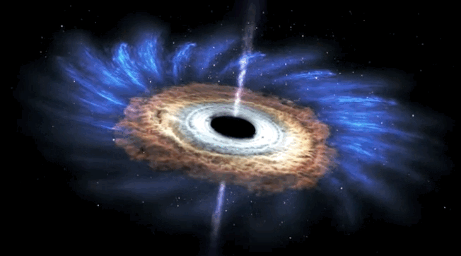
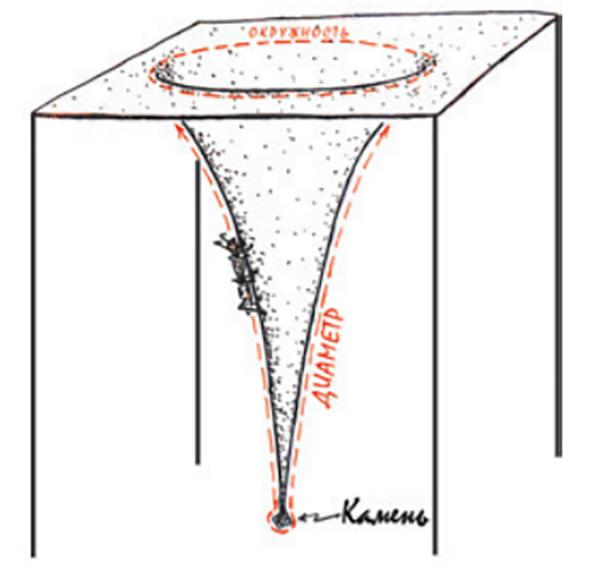
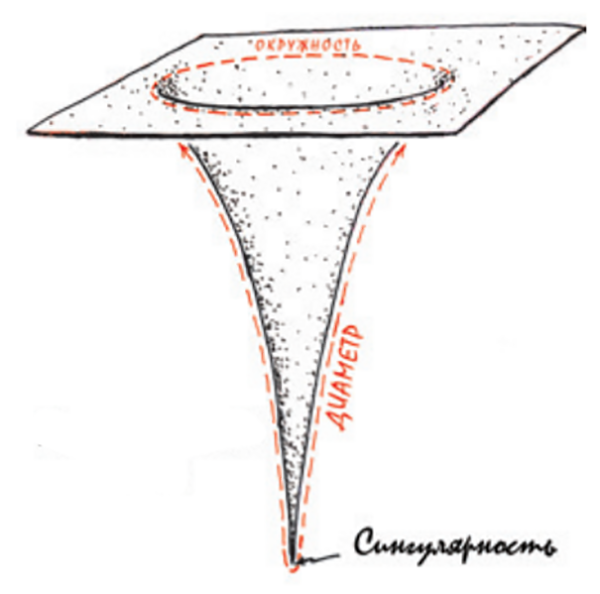

Что такое черная дыра?

Попробуйте выбрать любую дату:
Не можете выбрать ничего кроме прошлого? Подождите,сейчас я вам объясню.
Чёрная дыра — область пространства-времени, гравитационное притяжение которой настолько велико, что покинуть её не могут даже объекты, движущиеся со скоростью света,
в том числе кванты самого света. Граница этой области называется горизонтом событий.
В простейшем случае сферически симметричной чёрной дыры он представляет собой сферу с радиусом Шварцшильда, который считается характерным размером чёрной дыры.
Теоретически возможность существования таких областей пространства-времени следует из
некоторых точных решений уравнений Эйнштейна, первое из которых было получено Карлом
Шварцшильдом в 1915 году. Изобретатель термина достоверно не известен, но само обозначение
было популяризовано Джоном Арчибальдом Уилером и впервые публично употреблено в популярной лекции
«Наша Вселенная: известное и неизвестное» (англ. Our Universe: the Known and Unknown) 29 декабря 1967 года[Комм 1].
Ранее подобные астрофизические объекты называли «сколлапсировавшие звёзды» или «коллапсары» (от англ. collapsed stars),
а также «застывшие звёзды» (англ. frozen stars).
Вопрос о реальном существовании чёрных дыр тесно связан с тем, насколько верна теория гравитации, из которой следует их
существование. В современной физике стандартной теорией гравитации, лучше всего подтверждённой экспериментально, является
общая теория относительности (ОТО), уверенно предсказывающая возможность образования чёрных дыр (но их существование возможно
и в рамках других (не всех) моделей, см. Альтернативные теории гравитации). Поэтому наблюдаемые данные анализируются
и интерпретируются, прежде всего, в контексте ОТО, хотя, строго говоря, эта теория пока не является интенсивно экспериментально
протестированной для условий, соответствующих области пространства-времени в непосредственной близости от горизонта чёрных дыр
звёздных масс (однако хорошо подтверждена в условиях, соответствующих сверхмассивным чёрным дырам, и с точностью до 94 %
согласуется с первым гравитационно-волновым сигналом). Поэтому утверждения о непосредственных доказательствах существования
чёрных дыр, в том числе и в этой статье ниже, строго говоря, следует понимать в смысле подтверждения существования астрономических объектов,
таких плотных и массивных, а также обладающих некоторыми другими наблюдаемыми свойствами, что их можно интерпретировать как
чёрные дыры общей теории относительности.
 

Так вот,к чему был мой пример с временем?
Представьте, что вы муравей, который живет на детском батуте — резиновом полотнище, натянутом между высокими шестами.
Под тяжестью лежащего на нем камня батут прогибается вниз.
Вы — слепой муравей и не можете видеть ни шестов, ни камня, ни прогибающегося полотнища.
вы умный муравей. Резиновое полотнище — это ваша вселенная, и вы подозреваете, что она искривлена.
Чтобы узнать ее форму, вы ползаете по кругу в верхней ее части, измеряя длину окружности, а потом
ползете с одного края на другой через центр, чтобы измерить диаметр.
Если бы ваша вселенная была плоской, длина окружности равнялась бы числу Пи (3,14159…), помноженному на диаметр.
Но, как выясняется, длина окружности меньше диаметра, даже не помноженного на Пи. Ваша вселенная, понимаете вы,
сильно искривлена!
 
Пространство вблизи черной дыры изгибается подобно батуту.
Сингулярность — это крошечная область, где поверхность «бесконечно искривляется» и сходится в точку,
в которой силы приливной гравитации бесконечно велики
, из-за чего материя в том виде, как мы ее знаем, растягивается и сжимается вплоть до полного исчезновения.
Замедление времени
Чем сильнее гравитационное притяжение, тем медленнее течет время. По сравнению с часами в космосе время на поверхности
Солнца замедляется на 6 миллиардных долей, а у поверхности черной дыры, где гравитация огромна, время почти не движется.
Это явление просто поражает воображение! Фильм «Интерстеллар» весьма интересно изображает замедление времени возле
черной дыры. Группа астронавтов направляется к ней на спускаемом аппарате (не совсем к поверхности, но на достаточно
близкое расстояние).
В это время один астронавт остается в корабле, находящемся на орбите над черной дырой.
Когда экспедиция всего через несколько дней возвращается на корабль, находит своего коллегу постаревшим на 22 года.
Астронавты пытаются спасти Землю, но знают, что их время течет гораздо медленнее, чем в окружающем пространстве. Они понимают,
что экологическая катастрофа на нашей планете развивается значительно быстрее, чем идет время их жизни.
Эффект замедления времени — враг, заставляющий их действовать с чрезвычайной быстротой. Этот же эффект подразумевает, что
когда (и если) они вернутся на Землю, их дети будут уже старше своих родителей.
Любопытно, что теоретически вы можете вернуться из такой экспедиции, если только не достигнете горизонта событий
— поверхности черной дыры.